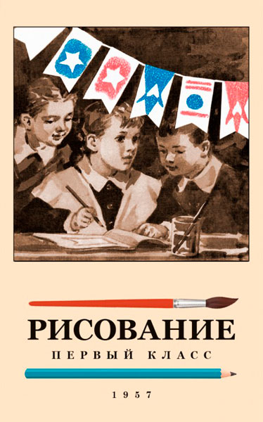

Лучшие черты академической методики
Постановка руки как первейшая задача
Прогрессия: от линии — к форме, от формы — к предмету
Ритм, пятно, композиция
Никакого «детского сюсюканья»
Графика как мышление, не просто навык
Ценность этого подхода — не в «красоте» картинки, а в том, как ребёнок учится смотреть, замечать, строить. Это фундамент, который работает и в рисовании, и в жизни.
